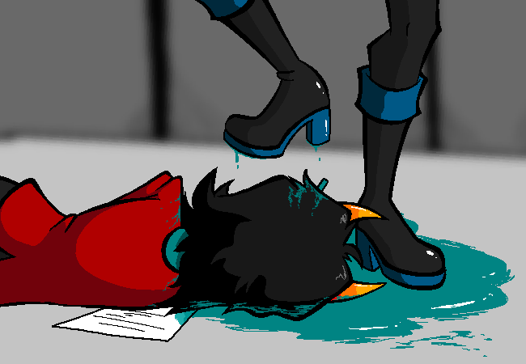

Yeah... A bit late for that.
You were so engrossed in the report, you failed to see the mess you are now pretty much walking in
to.
Damn psiionics!
These were good boots! Now they're covered in teal!
Oh and she was one of your best security officers. Maybe you should have let her transfer to to D
block like she asked.
Oh well... Might as well tell off this damn rebel.
If they think they can just psiionically murder your staff, they
have another thing coming!
Chever: Quick! Help your co-worker!
Fri Dec 31 2021 19:06:19 GMT+1100
!!Warning, Author Commentary may contain spoilers!!
Comments are occasionally posted on pages in MSPFA by users. These are archived from the
original pages
as-is. Oldest comment first.
|
ohlookpuppies
>Tell off that bitch |
Page: 31